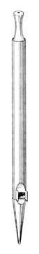
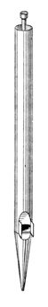
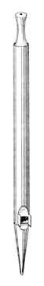
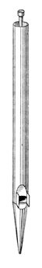

Lieblich Gedact German


Lieblich Gedact GermanThe Lieblichgedeckt has, according to Williams, been known since the mid-1500's, and was popularized in the 19th century by Walcker and Schulze. Schulze introduced it to England in his 1851 Exhibition organ where, according to Wedgwood, it �caused a sensation� and was �quickly raised to perfection� by Willis and Lewis. According to Sumner, it tended to displace the English Stopped Diapason.
The Lieblichgedeckt has been made of both wood and metal; Audsley states a preference for wood, while Bonavia-Hunt insists that its distinctive timbre must be produced by metal pipes. Even when of metal, the 16' and 8' octaves are often of wood. This stop is characterized by a very high cut-up, sometimes even greater than the width of the mouth. As introduced by Schulze it was of stopped metal, having upper lips unflatted and arched. Willis used pierced stoppers, a practice which was widely adopted, according to Bonavia-Hunt. Locher states that the 8' Lieblichgedeckt �is built by some masters with double lips from g upwards� (a Doppelgedeckt?). The drawings of metal pipes reproduced here are Wedgwood's; the wooden ones are Audsley's.
Wedgwood describes the tone of the Lieblichgedeckt as quieter, brighter and less thick than the Gedeckt or Stopped Diapason. Audsley also characterizes it as bright, and Irwin considers it much smoother than the Gedeckt.
Williams provides an alternate definition of the name Lieblich Gedackt: �a Doppelflöte of gentle intonation found in some organs of Walcker (Paulskirche, Frankfurt, 1827-33)�.
Bonavia-Hunt and Maclean claim that the 16' Lieblichgedeckt is called Lieblich Bordun, though other sources define the Lieblich Bordun differently. Adlung equates it with the Musicirgedackt. The synonym Angenehmgedeckt is mentioned only by Audsley.
Compare with Bourdon Doux.| Builder | Ratio / Halve on | CCC | CC | C | c1 | c2 | c3 | c4 | Wind |
|---|---|---|---|---|---|---|---|---|---|
| Schulze / Audsley | 1 : 2.66 18th pipe | 2.13 3.08 | 1.31 1.89 | 0.80 1.15 | 0.49 0.71 | 0.30 0.43 | 0.20 0.27 | 1 7/8 | |
| Audsley | 1 : 2.66 18th pipe | 2.95 3.94 | 1.81 2.41 | 1.11 1.47 | 0.68 0.91 | 0.45 0.55 | 0.26 0.34 | ||
| Audsley | 1 : 2.519 19th pipe | 3.79 5.36 | 2.39 3.38 | 1.50 2.13 | |||||
| Hopkins | irregular ~ 1 : 2.519 | 3 3/8 5 | 2 3/16 3 | 1 3/8 1 7/8 |
| Builder | Ratio | CC | C | c1 | c2 |
|---|---|---|---|---|---|
| Audsley | 1 : 2.519 | -- | 1.97" | 1.24" | 0.78" |
| Audsley | 1 : sqrt(8) | -- | 1.96" | 1.16" | 0.69" |
| German favorite | 1 : 2.519 | 3.51" | 2.21" | 1.39" | -- |
| Audsley (chamber organ) | 1 : 2.66 | -- | 1.81" | 1.11" | -- |
| Hope-Jones | ? | 3 1/4" | -- | 1 1/8" | -- |
Osiris contains over 250 examples, mostly at 16' and 8' pitch, with a half dozen at 4' and one at 32'. The earliest ones are listed below. No examples of Angenehmgedeckt (mentioned only by Audsley) pr Gedackt Liebligh (mentioned only by Williams) are known. Contributions welcome.
Lieblich Gedackt 8', Brustwerk; Neue Kirche �St. Bonifatius�, Arnstadt, Germany; Wender 1703.
Lieblich Gedackt 8', Oberwerk; Stadtkirche St. Johannes, Neustadt/Orla, Thuringia, Germany; Fincke 1724.
Lieblich Gedackt 8', Oberwerk; Castle Church, Altenburg, Germany; Troust 1739.
Lieblichgedeckt 16', 8', Echowerk/Brustwerk; Cathedral, Merseburg, Germany; Ladegast 1853.
Lieblich Gedact 16', Choir; Queen's College Chapel, Oxford, England; Walker 1866 (destroyed).
See the Sound Files appendix for general information.
| Lieblich Gedackt 8', Swell | Prudhoe Methodist Church, Northumberland, Scotland | arpeggio | St. Anne | |
| Lieblich Gedact 8', Great | St. Anne's Church, Moseley, Birmingham, England | Lewis, 1875 | arpeggio | St. Anne |
|
Original website compiled by Edward L. Stauff. For educational use only. LieblichGedeckt.html - Last updated 27 September 2006. |
Home Full Index |
{kind=link}